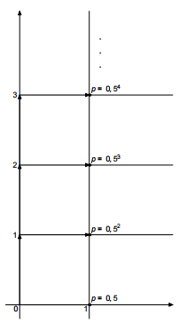

+ $0.5Eξ_1 = 0.5 + 0.5Eξ_1$, whence $Eξ_1$ = 1.
Since all the quantities $ξ_k$$ are distributed identically by construction, Eξ = Eξ_1 + Eξ_2 + ... + Eξ_{20111} = 2011 \times Eξ1 = 2011$.
+ $0.5Eξ_1 = 0.5 + 0.5Eξ_1$, whence $Eξ_1$ = 1.
Since all the quantities $ξ_k$$ are distributed identically by construction, Eξ = Eξ_1 + Eξ_2 + ... + Eξ_{20111} = 2011 \times Eξ1 = 2011$.
A fly moves from the origin only to the right or upwards along the lines of the integer grid $($a monotonic wander$)$. In each node of the net, the fly randomly selects the direction of further movement: upwards or to the right.
a) Prove that sooner or later the fly will reach the point with abscissa 2011. b) Find the mathematical expectation of the ordinate of the fly at the moment when the fly reached the abscissa 2011.
a) A fly will never hit the point with abscissa 1, only if it moves upward at each step. The probability of this is $0.5 \times 0.5 \times 0.5 \times 0.5 \times ...$ = 0. Thus, the fly must get to the point with abscissa 1 at some point. Arguing in the same way, we will find that sooner or later the fly will go to the point with abscissa 2 from the point with abscissa 1. And so on - sooner or later the fly will reach any whole positive abscissa. In particular, the abscissas of 2011.
b) On average, one step upward is linked to one step to the right. So, in 2011 steps to the right, you should expect 2011 steps upwards.
2011.
A more rigorous reasoning is as follows. Let us denote by $ξ_k (k = 1, ..., 2011)$ the random value of the "increase in the ordinate of the fly from the moment when the fly first hit the point with the abscissa k - 1, until the fly first hit the point with the abscissa k". Let ξ be the ordinate of a fly at the moment it reached abscissa 2011. Then ξ = $ξ_1 + ξ_2 + ... + ξ_{2011}$. We consider in more detail $ξ_1$. This value is the ordinate of the fly at the moment when the fly first hit the point with the abscissa 1. It is easy to understand how the quantity $ξ_1$ is distributed. To do this, it is sufficient to look at the figure, which shows the possible paths of the fly to the point with abscissa 1 and the probability of these paths. It can be seen that P $(ξ_1 = k)$ = $0.5^{k + 1}$.

This means that $Eξ_1 = 1 x 0.5^2 + 2 x 0.5^3 + 3 x 0.5^4 + ...$ = $(0.5^2 + 0.5^3 + 0.5^4 + ...) + 0.5 (1 x 0.5^2 + 2 • 0.5^3 + ...)$ =
+ $0.5Eξ_1 = 0.5 + 0.5Eξ_1$, whence $Eξ_1$ = 1.
Since all the quantities $ξ_k$$ are distributed identically by construction, Eξ = Eξ_1 + Eξ_2 + ... + Eξ_{20111} = 2011 \times Eξ1 = 2011$.